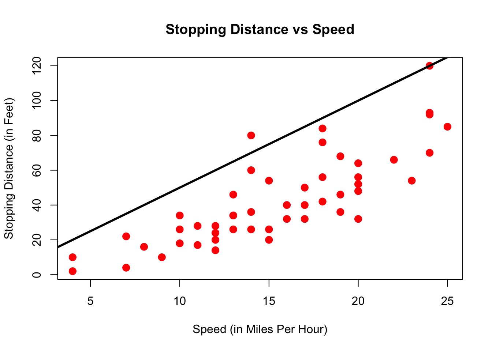

Chapter 3 Working With Data
In this chapter we will first learn some basic concepts that help summarizing data. Then, we will tackle a real-world task and read, clean, and summarize data from the web.
3.1 Summary Statistics
R has built in functions for a large number of summary statistics. For numeric variables, we can summarize data with the center and spread. Make sure to have loaded the ggplot2 library to be able to access the mpg dataset as introduced in section 2.6.7.
Central Tendency
| Measure | R |
Result |
|---|---|---|
| Mean | mean(mpg$cty) |
16.8589744 |
| Median | median(mpg$cty) |
17 |
Spread
| Measure | R |
Result |
|---|---|---|
| Variance | var(mpg$cty) |
18.1130736 |
| Standard Deviation | sd(mpg$cty) |
4.2559457 |
| IQR | IQR(mpg$cty) |
5 |
| Minimum | min(mpg$cty) |
9 |
| Maximum | max(mpg$cty) |
35 |
| Range | range(mpg$cty) |
9, 35 |
Categorical
For categorical variables, counts and percentages can be used for summary.
table(mpg$drv)##
## 4 f r
## 103 106 25table(mpg$drv) / nrow(mpg)##
## 4 f r
## 0.4401709 0.4529915 0.10683763.2 Plotting
Now that we have some data to work with, and we have learned about the data at the most basic level, our next tasks is to visualize the data. Often, a proper visualization can illuminate features of the data that can inform further analysis.
We will look at four methods of visualizing data that we will use throughout the course:
- Histograms
- Barplots
- Boxplots
- Scatterplots
3.2.1 Histograms
When visualizing a single numerical variable, a histogram will be our go-to tool, which can be created in R using the hist() function.
hist(mpg$cty)
The histogram function has a number of parameters which can be changed to make our plot look much nicer. Use the ? operator to read the documentation for the hist() to see a full list of these parameters.
hist(mpg$cty,
xlab = "Miles Per Gallon (City)",
main = "Histogram of MPG (City)", # main title
breaks = 12, # how many breaks?
col = "red",
border = "blue")
Importantly, you should always be sure to label your axes and give the plot a title. The argument breaks is specific to hist(). Entering an integer will give a suggestion to R for how many bars to use for the histogram. By default R will attempt to intelligently guess a good number of breaks, but as we can see here, it is sometimes useful to modify this yourself.
3.2.2 Barplots
Somewhat similar to a histogram, a barplot can provide a visual summary of a categorical variable, or a numeric variable with a finite number of values, like a ranking from 1 to 10.
barplot(table(mpg$drv))
barplot(table(mpg$drv),
xlab = "Drivetrain (f = FWD, r = RWD, 4 = 4WD)",
ylab = "Frequency",
main = "Drivetrains",
col = "dodgerblue",
border = "darkorange")
3.2.3 Boxplots
To visualize the relationship between a numerical and categorical variable, we will use a boxplot. In the mpg dataset, the drv variable takes a small, finite number of values. A car can only be front wheel drive, 4 wheel drive, or rear wheel drive.
unique(mpg$drv)## [1] "f" "4" "r"First note that we can use a single boxplot as an alternative to a histogram for visualizing a single numerical variable. To do so in R, we use the boxplot() function.
boxplot(mpg$hwy)
However, more often we will use boxplots to compare a numerical variable for different values of a categorical variable.
boxplot(hwy ~ drv, data = mpg)
Here used the boxplot() command to create side-by-side boxplots. However, since we are now dealing with two variables, the syntax has changed. The R syntax hwy ~ drv, data = mpg reads “Plot the hwy variable against the drv variable using the dataset mpg.” We see the use of a ~ (which specifies a formula) and also a data = argument. This will be a syntax that is common to many functions we will use in this course.
boxplot(hwy ~ drv, data = mpg,
xlab = "Drivetrain (f = FWD, r = RWD, 4 = 4WD)",
ylab = "Miles Per Gallon (Highway)",
main = "MPG (Highway) vs Drivetrain",
pch = 20,
cex = 2,
col = "darkorange",
border = "dodgerblue")
Again, boxplot() has a number of additional arguments which have the ability to make our plot more visually appealing.
3.2.4 Scatterplots
Lastly, to visualize the relationship between two numeric variables we will use a scatterplot. This can be done with the plot() function and the ~ syntax we just used with a boxplot. (The function plot() can also be used more generally; see the documentation for details.)
plot(hwy ~ displ, data = mpg)
plot(hwy ~ displ, data = mpg,
xlab = "Engine Displacement (in Liters)",
ylab = "Miles Per Gallon (Highway)",
main = "MPG (Highway) vs Engine Displacement",
pch = 20,
cex = 2,
col = "dodgerblue")
3.2.5 ggplot
All of the above plots could also have been generate using the ggplot function from the already loaded ggplot2 package. Which function you use is up to you, but sometimes a plot is easier to build in base R (like in the boxplot example maybe), sometimes the other way around.
ggplot(data=mpg,aes(x=displ,y=hwy)) + geom_point()
ggplot is impossible to describe in brief terms, so please look at the package’s website which provides excellent guidance. We will from time to time use ggplot in this book, so try to familiarize yourself with it. Let’s quickly demonstrate how one could customize that first plot:
ggplot(data=mpg,aes(x=displ,y=hwy)) + # ggplot() makes base plot
geom_point(color="blue",size=2) + # how to show x and y?
scale_y_continuous(name="Miles Per Gallon (Highway)") + # name of y axis
scale_x_continuous(name="Engine Displacement (in Liters)") + # x axis
theme_bw() + # change the background
ggtitle("MPG (Highway) vs Engine Displacement") # add a title
3.2.6 dplyr
The dplyr package is widely used tool to work with data in R. We will briefly look at it’s functionality now.